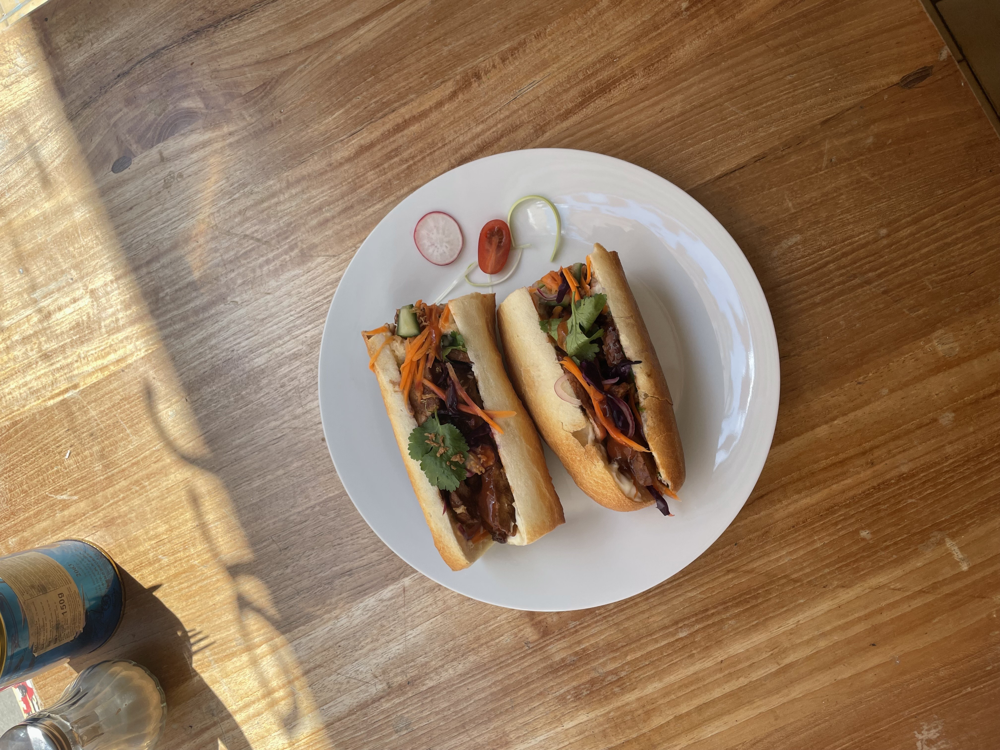
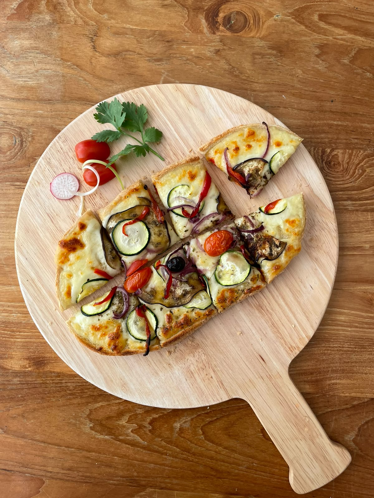
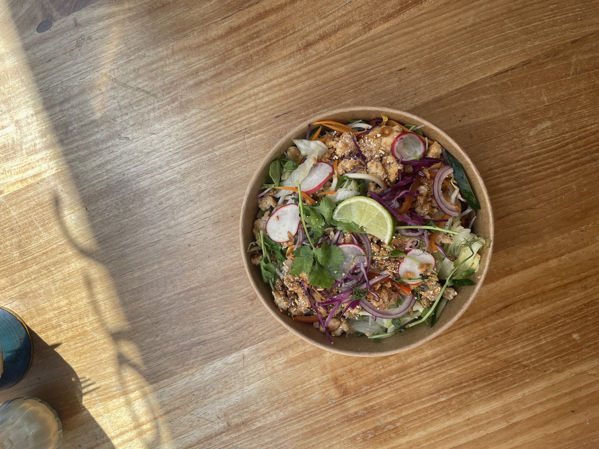
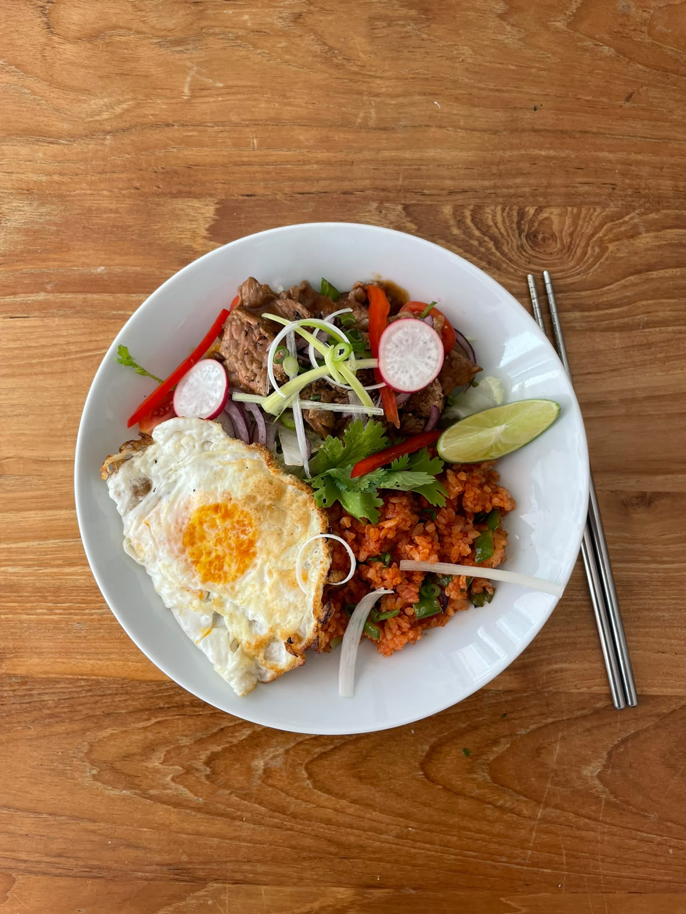
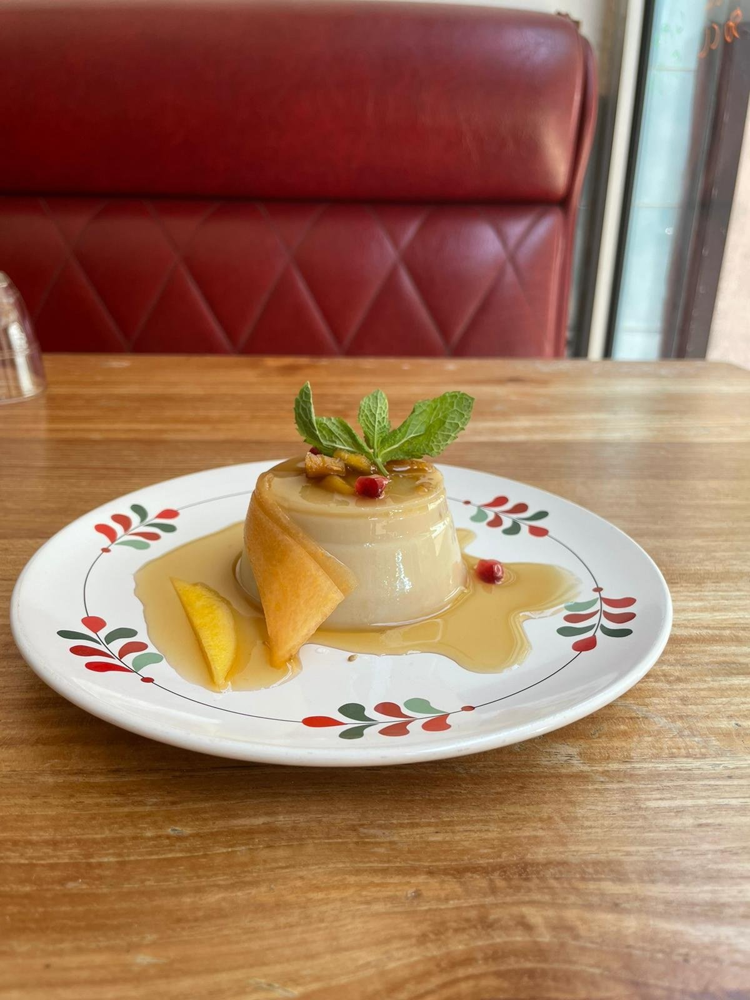
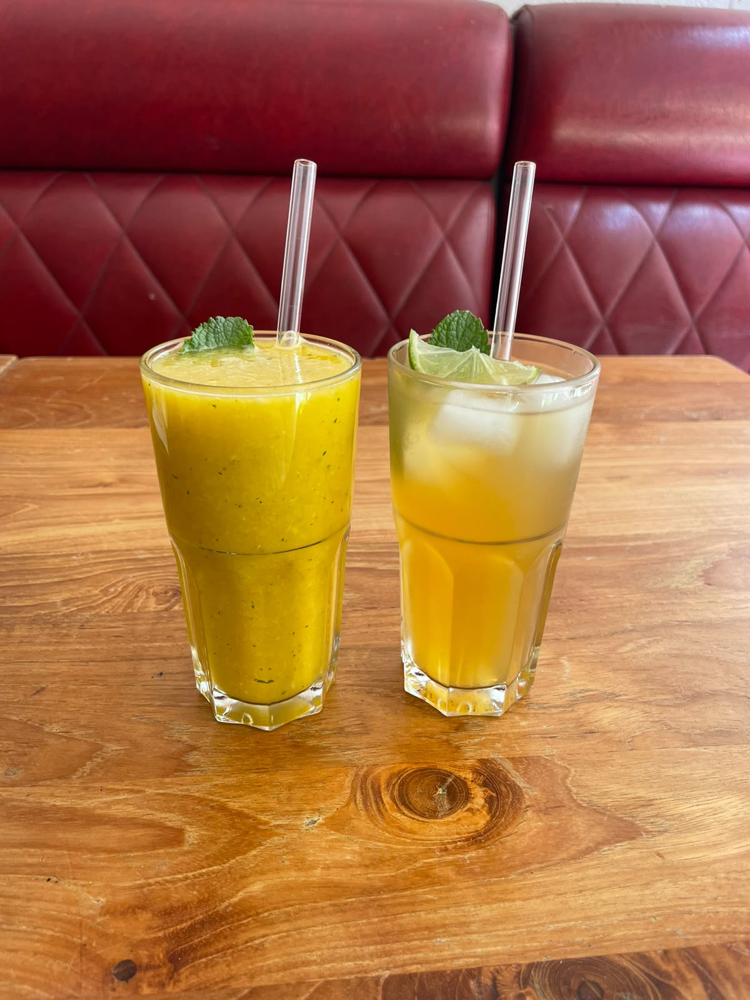
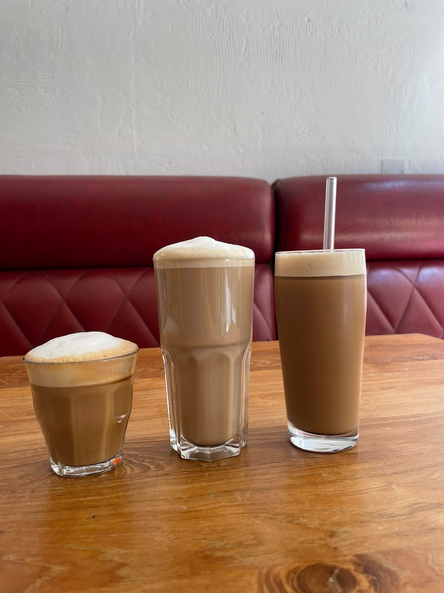

Cuisine fusion d'Asie du Sud-Est
& d'ailleurs
Tout est fait maison, alors la carte évolue régulièrement selon le marché et les arrivages. Une mini-carte, au jour le jour.
100% halal
Plats végétariens
Options sans gluten
SERVICE AU COMPTOIR
10 Rue Doudart de Lagrée, 38000 Grenoble
Lundi–Jeudi & Samedi · 9h30–14h30 · Fermé vendredi & dimanche
Réservation par SMS · 07 69 16 08 10
Instagram @tuktukgrenoble
La carte · SERVICE AU COMPTOIR
Banh Mi
Sandwich
Bœuf au saté8,90
Mayonnaise coriandre, pickles maison (carottes, concombre, chou rouge), oignons frits, bœuf mariné saté
Poulet au gingembre8,50
Mayonnaise coriandre, pickles maison (carottes, concombre, chou rouge), oignons frits, poulet mariné au gingembre
Veau char siu8,90
Mayonnaise coriandre, pickles maison (carottes, concombre, chou rouge), oignons frits, veau mariné char siu
Bruschette
Pain grillé maison
Margarita5,70
Végétarienne6,70
Napolitaine6,70
Thon6,70

Banh mì maison

Bruschette maison
La carte · SERVICE AU COMPTOIR
Plats
Bowls & wok
Bœuf Lóc Lác11,90
Poivre de Kampot, salade, oignon rouge, tomate cerise, riz jasmin sauté, œuf au plat, coriandre, citron vert
Salade de poulet façon Larb10,50
Crudités (carottes, concombre, soja, coriandre, menthe), vermicelles croquantes, poulet haché à la citronnelle et poudre de riz gluant grillé, cacahuète, citron vert
Bobun bœuf ou crevettes10,90
Salade, carotte, concombre, soja, menthe fraîche, cacahuète, vermicelles de riz, nem frais au poulet, bœuf mariné au saté ou crevettes, citron vert, coriandre
Salade de tofu bio à la citronnelle et kombava10,00
Crudités, vermicelles de riz, cacahuètes, citron vert

Salade de poulet façon Larb

Bœuf Lóc Lác
La carte · SERVICE AU COMPTOIR
Desserts
Fruits frais
Perles de tapioca, lait de coco & mangue5,50
Salade de fruits frais5,50
Tofu soyeux, caramel, gingembre5,50

Salade de fruits frais

Tofu soyeux, caramel, gingembre
La carte · SERVICE AU COMPTOIR
Boissons
Bio & pressé maison
Café bio1,00 / 1,30
à emporter / sur place
Café frappé3,50
+ lait végétal (+0,50€)
Café Latte (lait soja)3,50
Thé glacé maison3,70
Thé noir ou thé vert, menthe fraîche, gingembre bio
Thé glacé maison citron & miel3,90
Thé noir ou thé vert, menthe fraîche, gingembre bio, citron & miel
Jus de fruits frais du jour 33cl4,90
Orange, ananas, banane, menthe fraîche, gingembre bio · 50cl (+1€)
Jus de fruits exotiques en canette 33cl3,00
Mangue, litchee, passion, coco
Soft gazeux 25cl2,00
Slim ananas · Hamoud limonade · Hamoud cola
Infusion menthe fraîche2,30
+ gingembre bio (+0,30€) · ou + gingembre bio & miel (+0,60€)

Thé glacé maison & jus du jour

Café frappé & latte